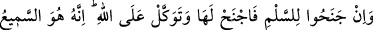
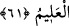

Âyet, insanın düşmanlarının hepsini bilemeyeceğine delalet etmektedir. Mesnevi’de
gelir:
İnsanoğlunun gizli düşmanı çoktur
İhtiyata riâyet eden kimse akıllıdır
Az olsun çok olsun düşmana karşı cihâd hazırlığı için “Allah yolunda ne
harcarsanız” karşılığı “tam olarak size ödenir,” sevâbı verilmemek veya eksiltilmek
sûretiyle “hiç haksızlığa uğratılmazsınız.”
Mutlak olarak ameller, sevabı gerektiren bir şey değildir ki, sevap verilmeyince
zulüm olsun. Buna rağmen âyette sevab verilmemesinden zulüm olarak bahsedilmesi,
Yüce Allah’ın böyle bir şeyden tamâmen münezzeh olduğunu beyan etmek içindir. Yani,
O’ndan kabih fiillerin sudûru nasıl muhal ise yine aynı şekilde yapılan hayırlı amelleri
sevapsız bırakması da aynı şekilde muhaldir, denilmek istenmiştir.
Rivayet edilmiştir ki: Rasûlullah (s.a.v.)’e (mi‘racda) adımını, gözünün alabildiği en
uzak yere atan bir at getirildi. Cibril (a.s.) ile birlikte yola çıktılar. Bir gün ektiklerini
ertesi gün biçen bir topluluğun yanına vardılar. Biçtikleri tekrar yetişiyor, biçilmemiş
gibi oluyordu. Efendimiz:
“Ey Cibrîl, bunlar kimlerdir?” diye sorunca Cebrail:
“Bunlar Allah yolunda cihad eden kimselerdir. İyilikleri yedi yüz misli ile karşılık
görür. Harcadıkları her şeyin yerine Allah yenisini bahşeder.” diye cevap verdi.[50]
Bir hadiste şöyle buyurulmuştur: “Allah yolunda cihad eden bir mücahide ya da
darda kalan bir borçluya veya mükâteb bir köleye yardım edeni Allah kendisinin
gölgesinden başka gölgenin bulunmadığı kıyamet gününde kendi gölgesi altında
gölgelendirir.”[51]
Hâfız şöyle der:
Karun hazinesini zaman yele verdi
Bunu goncaya söyle, altın saklamasın
Başka bir beyitinde de şöyle der:
İster cehennemlik, ister cennetlik, ister insan ister melek
Hepsinin nazarında, cimrilik küfürdür ve bu yola terstir